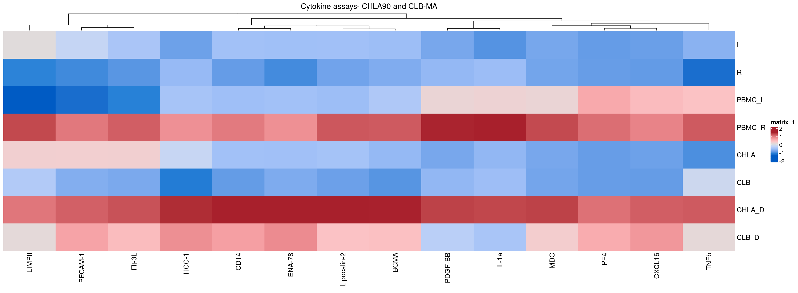
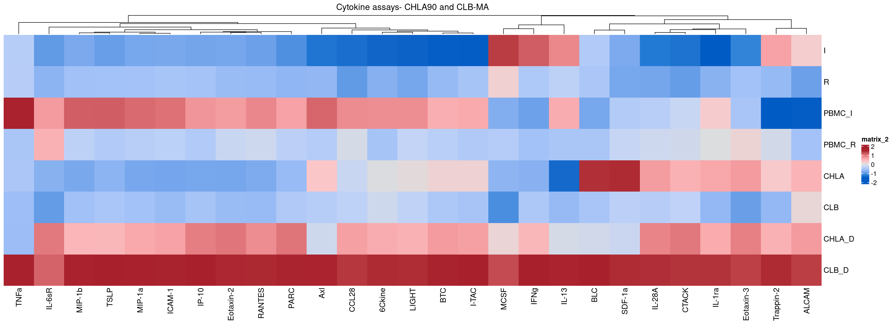
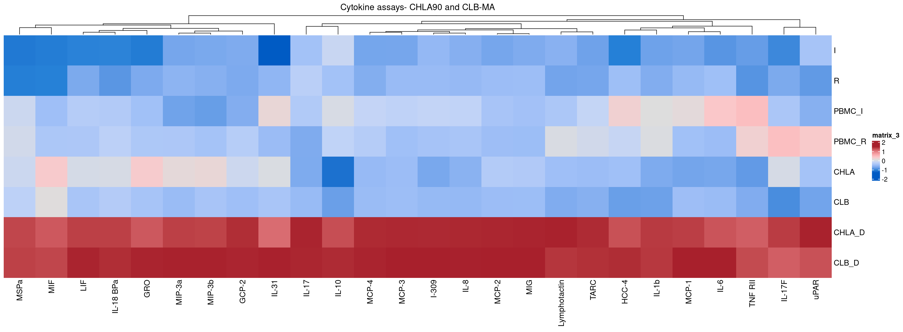

Last updated: 2024-08-11
Checks: 6 1
Knit directory: MapMetSC/
This reproducible R Markdown analysis was created with workflowr (version 1.7.1). The Checks tab describes the reproducibility checks that were applied when the results were created. The Past versions tab lists the development history.
The R Markdown file has unstaged changes. To know which version of
the R Markdown file created these results, you’ll want to first commit
it to the Git repo. If you’re still working on the analysis, you can
ignore this warning. When you’re finished, you can run
wflow_publish to commit the R Markdown file and build the
HTML.
Great job! The global environment was empty. Objects defined in the global environment can affect the analysis in your R Markdown file in unknown ways. For reproduciblity it’s best to always run the code in an empty environment.
The command set.seed(20240314) was run prior to running
the code in the R Markdown file. Setting a seed ensures that any results
that rely on randomness, e.g. subsampling or permutations, are
reproducible.
Great job! Recording the operating system, R version, and package versions is critical for reproducibility.
Nice! There were no cached chunks for this analysis, so you can be confident that you successfully produced the results during this run.
Great job! Using relative paths to the files within your workflowr project makes it easier to run your code on other machines.
Great! You are using Git for version control. Tracking code development and connecting the code version to the results is critical for reproducibility.
The results in this page were generated with repository version e212c66. See the Past versions tab to see a history of the changes made to the R Markdown and HTML files.
Note that you need to be careful to ensure that all relevant files for
the analysis have been committed to Git prior to generating the results
(you can use wflow_publish or
wflow_git_commit). workflowr only checks the R Markdown
file, but you know if there are other scripts or data files that it
depends on. Below is the status of the Git repository when the results
were generated:
Unstaged changes:
Modified: analysis/11_cytokine_assays.Rmd
Note that any generated files, e.g. HTML, png, CSS, etc., are not included in this status report because it is ok for generated content to have uncommitted changes.
These are the previous versions of the repository in which changes were
made to the R Markdown (analysis/11_cytokine_assays.Rmd)
and HTML (docs/11_cytokine_assays.html) files. If you’ve
configured a remote Git repository (see ?wflow_git_remote),
click on the hyperlinks in the table below to view the files as they
were in that past version.
| File | Version | Author | Date | Message |
|---|---|---|---|---|
| Rmd | e212c66 | LazDaria | 2024-08-11 | update |
| Rmd | 4c327cc | LazDaria | 2024-07-28 | changes to figures 20240728 |
| Rmd | 8875e14 | LazDaria | 2024-06-24 | cytokine heatmap update |
| Rmd | f29ef30 | LazDaria | 2024-06-05 | cytokines |
| Rmd | 79db236 | LazDaria | 2024-06-04 | cytokine assays |
| Rmd | a488436 | LazDaria | 2024-06-03 | update |
| Rmd | 636298d | LazDaria | 2024-06-03 | CHLA-90 |
| Rmd | 4a0b65a | LazDaria | 2024-05-31 | cytokine assays |
In this Rmd file, we will plot a heatmap to visualize the abundance of cytokines in co-cultivation experiments.
library(readxl)
library(dplyr)
Attaching package: 'dplyr'The following objects are masked from 'package:stats':
filter, lagThe following objects are masked from 'package:base':
intersect, setdiff, setequal, unionlibrary(stringr)
library(tidyr)
library(ComplexHeatmap)Loading required package: grid========================================
ComplexHeatmap version 2.12.1
Bioconductor page: http://bioconductor.org/packages/ComplexHeatmap/
Github page: https://github.com/jokergoo/ComplexHeatmap
Documentation: http://jokergoo.github.io/ComplexHeatmap-reference
If you use it in published research, please cite either one:
- Gu, Z. Complex heatmaps reveal patterns and correlations in multidimensional
genomic data. Bioinformatics 2016.
- Gu, Z. Complex Heatmap Visualization. iMeta 2022.
The new InteractiveComplexHeatmap package can directly export static
complex heatmaps into an interactive Shiny app with zero effort. Have a try!
This message can be suppressed by:
suppressPackageStartupMessages(library(ComplexHeatmap))
========================================library(viridis)Loading required package: viridisLitelibrary(openxlsx)
library(bruceR)
bruceR (v2023.9)
Broadly Useful Convenient and Efficient R functions
Packages also loaded:
✔ data.table ✔ emmeans
✔ dplyr ✔ lmerTest
✔ tidyr ✔ effectsize
✔ stringr ✔ performance
✔ ggplot2 ✔ interactions
Main functions of `bruceR`:
cc() Describe() TTEST()
add() Freq() MANOVA()
.mean() Corr() EMMEANS()
set.wd() Alpha() PROCESS()
import() EFA() model_summary()
print_table() CFA() lavaan_summary()
For full functionality, please install all dependencies:
install.packages("bruceR", dep=TRUE)
Online documentation:
https://psychbruce.github.io/bruceR
To use this package in publications, please cite:
Bao, H.-W.-S. (2023). bruceR: Broadly useful convenient and efficient R functions (Version 2023.9) [Computer software]. https://CRAN.R-project.org/package=bruceR
NEWS: A new version of bruceR (2024.6) is available (2024-06-13)!
***** Please update *****
install.packages("bruceR", dep=TRUE)First, we load normalized data from three cytokine assays from Supplementary Table 4 provided on Zenodo (Supplementary_Tables/20240713_Suppl_Table4.xlsx).
data_inf <- read_excel(file.path(params$input, 'Supplementary_Tables/20240713_Suppl_Table4.xlsx'), sheet = "INF3")
data_che <- read_excel(file.path(params$input, 'Supplementary_Tables/20240713_Suppl_Table4.xlsx'), sheet = "CHE1")
data_rec <- read_excel(file.path(params$input, 'Supplementary_Tables/20240713_Suppl_Table4.xlsx'), sheet = "REC1")
#Remove positive controls
data_inf <- data_inf[!grepl("POS", data_inf$Normalization),]
data_che <- data_che[!grepl("POS", data_che$Normalization),]
data_rec <- data_rec[!grepl("POS", data_rec$Normalization),]
head(data_che)# A tibble: 6 × 17
Normalization R `PBMC R` CLB...4 CLB...5 `CLB D...6` `CLB D...7`
<chr> <dbl> <dbl> <dbl> <dbl> <dbl> <dbl>
1 6Ckine 494. 551. 711. 576. 1297. 809.
2 Axl 256. 314. 362. 272. 731. 736.
3 BTC 255. 504. 394. 425. 2611. 1575.
4 CCL28 231. 650. 494. 583. 1533. 1196.
5 CTACK 259. 440. 538. 269. 723. 870.
6 CXCL16 85.0 9226. 168. 84.1 8105. 8821.
# ℹ 10 more variables: `CLB T...8` <dbl>, `CLB T...9` <dbl>, I <dbl>,
# `PBMC I` <dbl>, CHLA...12 <dbl>, CHLA...13 <dbl>, `CHLA D...14` <dbl>,
# `CHLA D...15` <dbl>, `CHLA T...16` <dbl>, `CHLA T...17` <dbl># Rename columns: remove dots and numbers, replace spaces with underscores
clean_colnames <- function(colname) {
colname %>%
str_replace_all("\\.\\d*$", "") %>% # Remove trailing numbers after a dot
str_replace_all("\\.\\.\\.+\\d*", "") %>% # Remove dots and trailing numbers
str_replace_all(" ", "_") # Replace spaces with underscores
}
# Apply the renaming function
colnames(data_inf) <- sapply(colnames(data_inf), clean_colnames)
colnames(data_che) <- sapply(colnames(data_che), clean_colnames)
colnames(data_rec) <- sapply(colnames(data_rec), clean_colnames)# Combine duplicate columns by calculating the mean
combine_duplicate_columns <- function(df) {
df %>%
pivot_longer(-Normalization, names_to = "colname", values_to = "value") %>%
group_by(Normalization, colname) %>%
summarise(mean_value = mean(value, na.rm = TRUE), .groups = 'drop') %>%
pivot_wider(names_from = colname, values_from = mean_value)
}
# Apply the function to combine duplicate columns
data_combined_inf <- combine_duplicate_columns(data_inf)
data_combined_che <- combine_duplicate_columns(data_che)
data_combined_rec <- combine_duplicate_columns(data_rec)
# Remove dots from the column names
colnames(data_combined_inf) <- str_replace_all(colnames(data_combined_inf), "\\.", "")
colnames(data_combined_che) <- str_replace_all(colnames(data_combined_che), "\\.", "")
colnames(data_combined_rec) <- str_replace_all(colnames(data_combined_rec), "\\.", "")
#Set first column as rownames
data_combined_inf <- as.data.frame(data_combined_inf)
rownames(data_combined_inf) <- data_combined_inf$Normalization
data_combined_inf <- data_combined_inf[-1]
data_combined_che <- as.data.frame(data_combined_che)
rownames(data_combined_che) <- data_combined_che$Normalization
data_combined_che <- data_combined_che[-1]
data_combined_rec <- as.data.frame(data_combined_rec)
rownames(data_combined_rec) <- data_combined_rec$Normalization
data_combined_rec <- data_combined_rec[-1]We will then calculate the log2FC between mono- and co-cultures and filter those that are increasing upon co-culture in nMNA, MNA or both.
data_all <- rbind(data_combined_inf, data_combined_che, data_combined_rec)
df <- as.data.frame(data_all)
col_filter_chla <- c("I", "PBMC_I", "CHLA", "CHLA_D")
col_filter_clb <- c("R", "PBMC_R", "CLB", "CLB_D")
df_unscaled <- cbind(df[,col_filter_chla], df[,col_filter_clb])
# Create the new columns with the specified calculations
df_unscaled <- df_unscaled %>%
mutate(
log2FC_CHLA_D_I = log2(CHLA_D / I),
log2FC_CLB_D_R = log2(CLB_D / R),
log2FC_CHLA_D_PBMC_I = log2(CHLA_D / PBMC_I),
log2FC_CLB_D_PBMC_R = log2(CLB_D / PBMC_R),
log2FC_CHLA_D_CHLA = log2(CHLA_D / CHLA),
log2FC_CLB_D_CLB = log2(CLB_D / CLB)
)
# Add the new column based on the condition
df_unscaled <- df_unscaled %>%
mutate(both = if_else(
log2FC_CHLA_D_I >= 0.3 &
log2FC_CLB_D_R >= 0.3 &
log2FC_CHLA_D_PBMC_I >= 0.3 &
log2FC_CLB_D_PBMC_R >= 0.3 &
log2FC_CHLA_D_CHLA >= 0.3 &
log2FC_CLB_D_CLB >= 0.3,
1,
0
)) %>%
mutate(nMNA = if_else(
log2FC_CHLA_D_I >= 0.3 &
log2FC_CHLA_D_PBMC_I >= 0.3 &
log2FC_CHLA_D_CHLA >= 0.3 &
both == 0,
1,
0
)) %>%
mutate(MNA = if_else(
log2FC_CLB_D_R >= 0.3 &
log2FC_CLB_D_PBMC_R >= 0.3 &
log2FC_CLB_D_CLB >= 0.3 &
both == 0,
1,
0
))
df_up <- df_unscaled %>% filter(both == 1 | nMNA == 1 | MNA == 1)Let’s plot a heatmap of the cytokines enriched in nMNA only:
df <- df_up
#Annotation
col_vector <- c("0"="#ffffbf", "1"="#fc8d59")
column_ha <- HeatmapAnnotation(nMNA = df_up$nMNA,
MNA = df_up$MNA,
both = df_up$both,
col=list(nMNA=col_vector,
MNA=col_vector,
both=col_vector))
#Separate scaling per cell line
col_filter_chla <- c("I", "PBMC_I", "CHLA", "CHLA_D")
col_filter_clb <- c("R", "PBMC_R", "CLB", "CLB_D")
data_sep_scale <- rbind(scale(t(df_up[,col_filter_chla])), scale(t(df_up[,col_filter_clb])))
# Define a diverging color palette
diverging_palette <- coolwarm_hcl <- colorspace::diverging_hcl(11, h = c(250, 10), c = 100, l = c(37, 88), power = c(0.7, 1.7))
Heatmap(data_sep_scale[, df_up$nMNA==1],
column_title = "Cytokine assays- CHLA90 and CLB-MA",
row_order = c("I", "R", "PBMC_I", "PBMC_R", "CHLA", "CLB", "CHLA_D", "CLB_D"),
cluster_columns =T,
col=diverging_palette
)
in MNA only:
Heatmap(data_sep_scale[, df_up$MNA==1],
column_title = "Cytokine assays- CHLA90 and CLB-MA",
row_order = c("I", "R", "PBMC_I", "PBMC_R", "CHLA", "CLB", "CHLA_D", "CLB_D"),
cluster_columns =T,
col=diverging_palette
)
or in both:
Heatmap(data_sep_scale[, df_up$both==1],
column_title = "Cytokine assays- CHLA90 and CLB-MA",
row_order = c("I", "R", "PBMC_I", "PBMC_R", "CHLA", "CLB", "CHLA_D", "CLB_D"),
cluster_columns =T,
col=diverging_palette
)
R version 4.2.0 (2022-04-22)
Platform: x86_64-pc-linux-gnu (64-bit)
Running under: Ubuntu 20.04.4 LTS
Matrix products: default
BLAS: /usr/lib/x86_64-linux-gnu/openblas-pthread/libblas.so.3
LAPACK: /usr/lib/x86_64-linux-gnu/openblas-pthread/liblapack.so.3
locale:
[1] LC_CTYPE=en_US.UTF-8 LC_NUMERIC=C
[3] LC_TIME=en_US.UTF-8 LC_COLLATE=en_US.UTF-8
[5] LC_MONETARY=en_US.UTF-8 LC_MESSAGES=en_US.UTF-8
[7] LC_PAPER=en_US.UTF-8 LC_NAME=C
[9] LC_ADDRESS=C LC_TELEPHONE=C
[11] LC_MEASUREMENT=en_US.UTF-8 LC_IDENTIFICATION=C
attached base packages:
[1] grid stats graphics grDevices utils datasets methods
[8] base
other attached packages:
[1] ggplot2_3.4.4 interactions_1.1.5 lmerTest_3.1-3
[4] lme4_1.1-35.1 Matrix_1.6-5 performance_0.10.8
[7] effectsize_0.8.6 emmeans_1.9.0 data.table_1.14.10
[10] bruceR_2023.9 openxlsx_4.2.5.2 viridis_0.6.4
[13] viridisLite_0.4.2 ComplexHeatmap_2.12.1 tidyr_1.3.0
[16] stringr_1.5.1 dplyr_1.1.4 readxl_1.4.3
loaded via a namespace (and not attached):
[1] nlme_3.1-157 matrixStats_1.1.0 fs_1.6.3
[4] insight_0.19.7 doParallel_1.0.17 RColorBrewer_1.1-3
[7] rprojroot_2.0.4 numDeriv_2016.8-1.1 tools_4.2.0
[10] bslib_0.6.1 utf8_1.2.4 R6_2.5.1
[13] BiocGenerics_0.42.0 colorspace_2.1-0 GetoptLong_1.0.5
[16] withr_3.0.0 tidyselect_1.2.0 gridExtra_2.3
[19] compiler_4.2.0 git2r_0.33.0 cli_3.6.2
[22] Cairo_1.6-2 sandwich_3.1-0 bayestestR_0.13.1
[25] sass_0.4.8 scales_1.3.0 mvtnorm_1.2-4
[28] digest_0.6.34 minqa_1.2.6 rmarkdown_2.25
[31] pkgconfig_2.0.3 htmltools_0.5.7 highr_0.10
[34] fastmap_1.1.1 rlang_1.1.3 GlobalOptions_0.1.2
[37] rstudioapi_0.15.0 shape_1.4.6 jquerylib_0.1.4
[40] generics_0.1.3 zoo_1.8-12 jsonlite_1.8.8
[43] zip_2.3.0 magrittr_2.0.3 parameters_0.21.3
[46] Rcpp_1.0.12 munsell_0.5.0 S4Vectors_0.34.0
[49] fansi_1.0.6 lifecycle_1.0.4 stringi_1.8.3
[52] multcomp_1.4-25 whisker_0.4.1 yaml_2.3.8
[55] MASS_7.3-56 parallel_4.2.0 promises_1.2.1
[58] crayon_1.5.2 lattice_0.20-45 splines_4.2.0
[61] pander_0.6.5 jtools_2.2.2 circlize_0.4.15
[64] magick_2.8.2 knitr_1.45 pillar_1.9.0
[67] boot_1.3-28 rjson_0.2.21 estimability_1.4.1
[70] codetools_0.2-18 stats4_4.2.0 glue_1.7.0
[73] evaluate_0.23 nloptr_2.0.3 png_0.1-8
[76] vctrs_0.6.5 httpuv_1.6.13 foreach_1.5.2
[79] cellranger_1.1.0 gtable_0.3.4 purrr_1.0.2
[82] datawizard_0.9.1 clue_0.3-65 cachem_1.0.8
[85] xfun_0.41 xtable_1.8-4 coda_0.19-4
[88] later_1.3.2 survival_3.3-1 tibble_3.2.1
[91] iterators_1.0.14 IRanges_2.30.1 workflowr_1.7.1
[94] cluster_2.1.3 TH.data_1.1-2
sessionInfo()R version 4.2.0 (2022-04-22)
Platform: x86_64-pc-linux-gnu (64-bit)
Running under: Ubuntu 20.04.4 LTS
Matrix products: default
BLAS: /usr/lib/x86_64-linux-gnu/openblas-pthread/libblas.so.3
LAPACK: /usr/lib/x86_64-linux-gnu/openblas-pthread/liblapack.so.3
locale:
[1] LC_CTYPE=en_US.UTF-8 LC_NUMERIC=C
[3] LC_TIME=en_US.UTF-8 LC_COLLATE=en_US.UTF-8
[5] LC_MONETARY=en_US.UTF-8 LC_MESSAGES=en_US.UTF-8
[7] LC_PAPER=en_US.UTF-8 LC_NAME=C
[9] LC_ADDRESS=C LC_TELEPHONE=C
[11] LC_MEASUREMENT=en_US.UTF-8 LC_IDENTIFICATION=C
attached base packages:
[1] grid stats graphics grDevices utils datasets methods
[8] base
other attached packages:
[1] ggplot2_3.4.4 interactions_1.1.5 lmerTest_3.1-3
[4] lme4_1.1-35.1 Matrix_1.6-5 performance_0.10.8
[7] effectsize_0.8.6 emmeans_1.9.0 data.table_1.14.10
[10] bruceR_2023.9 openxlsx_4.2.5.2 viridis_0.6.4
[13] viridisLite_0.4.2 ComplexHeatmap_2.12.1 tidyr_1.3.0
[16] stringr_1.5.1 dplyr_1.1.4 readxl_1.4.3
loaded via a namespace (and not attached):
[1] nlme_3.1-157 matrixStats_1.1.0 fs_1.6.3
[4] insight_0.19.7 doParallel_1.0.17 RColorBrewer_1.1-3
[7] rprojroot_2.0.4 numDeriv_2016.8-1.1 tools_4.2.0
[10] bslib_0.6.1 utf8_1.2.4 R6_2.5.1
[13] BiocGenerics_0.42.0 colorspace_2.1-0 GetoptLong_1.0.5
[16] withr_3.0.0 tidyselect_1.2.0 gridExtra_2.3
[19] compiler_4.2.0 git2r_0.33.0 cli_3.6.2
[22] Cairo_1.6-2 sandwich_3.1-0 bayestestR_0.13.1
[25] sass_0.4.8 scales_1.3.0 mvtnorm_1.2-4
[28] digest_0.6.34 minqa_1.2.6 rmarkdown_2.25
[31] pkgconfig_2.0.3 htmltools_0.5.7 highr_0.10
[34] fastmap_1.1.1 rlang_1.1.3 GlobalOptions_0.1.2
[37] rstudioapi_0.15.0 shape_1.4.6 jquerylib_0.1.4
[40] generics_0.1.3 zoo_1.8-12 jsonlite_1.8.8
[43] zip_2.3.0 magrittr_2.0.3 parameters_0.21.3
[46] Rcpp_1.0.12 munsell_0.5.0 S4Vectors_0.34.0
[49] fansi_1.0.6 lifecycle_1.0.4 stringi_1.8.3
[52] multcomp_1.4-25 whisker_0.4.1 yaml_2.3.8
[55] MASS_7.3-56 parallel_4.2.0 promises_1.2.1
[58] crayon_1.5.2 lattice_0.20-45 splines_4.2.0
[61] pander_0.6.5 jtools_2.2.2 circlize_0.4.15
[64] magick_2.8.2 knitr_1.45 pillar_1.9.0
[67] boot_1.3-28 rjson_0.2.21 estimability_1.4.1
[70] codetools_0.2-18 stats4_4.2.0 glue_1.7.0
[73] evaluate_0.23 nloptr_2.0.3 png_0.1-8
[76] vctrs_0.6.5 httpuv_1.6.13 foreach_1.5.2
[79] cellranger_1.1.0 gtable_0.3.4 purrr_1.0.2
[82] datawizard_0.9.1 clue_0.3-65 cachem_1.0.8
[85] xfun_0.41 xtable_1.8-4 coda_0.19-4
[88] later_1.3.2 survival_3.3-1 tibble_3.2.1
[91] iterators_1.0.14 IRanges_2.30.1 workflowr_1.7.1
[94] cluster_2.1.3 TH.data_1.1-2